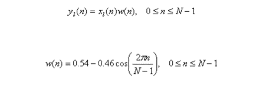

In this step each individual frame is windowed This process assists in eliminating spectral distortion and noise. The idea here is to set the beginning and end of each frame to 0 so that the discontinuities can be eliminated. We define the window as w(n), in the specified interval shown, where N is the number of samples in each frame, then the result of windowing is the signal A typical windowing process is the Hamming window:
